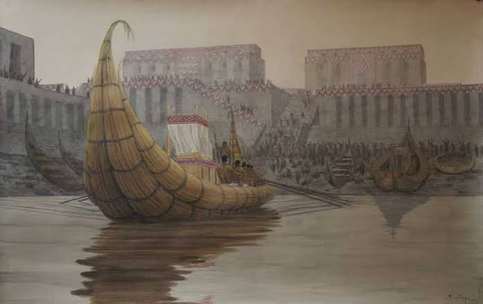
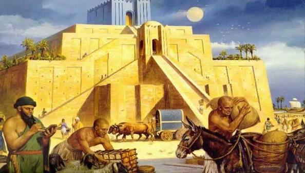

A Evolução Histórica do Comércio na Mesopotâmia: O Berço dos Negócios
O comércio moderno nasceu entre os rios Tigre e Eufrates. A Mesopotâmia (atual Iraque) tinha terras incrivelmente férteis para a agricultura, mas sofria com a falta crônica de pedras, metais e madeira de qualidade. Essa escassez forçou os povos mesopotâmicos a se tornarem os inventores das redes de comércio internacional, dos primeiros contratos escritos e até dos primeiros sistemas de crédito do mundo.
Os Sumérios e a Invenção dos Registros (Cerca de 3500 a.C. – 2334 a.C.)
- Necessidade gera inovação: Para importar madeira do Líbano e metais do Irã, os sumérios exportavam seus excedentes de cevada, tecidos de lã e óleo.
- A escrita como nota fiscal: A escrita cuneiforme não foi criada para poemas, mas para os negócios. Placas de argila registravam quantos sacos de grãos saíam e quantas cabeças de gado entravam nos templos e palácios.

A Babilônia e as Primeiras Leis Comerciais (Séc. XVIII a.C. – VI a.C.)
- Código de Hamurábi: A Babilônia trouxe ordem jurídica aos mercados. O famoso código de leis estipulava juros máximos para empréstimos, punições para fraudes de pesos e medidas e regras para o comércio por comissão.
- A moeda antes da moeda: Embora moedas cunhadas ainda não existissem, os babilônios usavam o shekel — um peso fixo de prata — como padrão para precificar tudo, funcionando como um dinheiro primitivo.
Os Mercadores Assírios e as Redes de Longa Distância (Séc. XX a.C. – VII a.C.)
- Empresas familiares antigas: Os assírios operavam redes comerciais de longa distância que cruzavam montanhas. Eles estabeleceram colônias comerciais estáveis (chamadas karum) bem longe de casa.
- Logística de caravanas: Utilizando centenas de burros de carga, transportavam toneladas de tecidos finos babilônios e estanho para a Anatólia, retornando carregados de ouro e prata.
O Hub do Oriente Médio sob Nabucodonosor II (Séc. VI a.C.)
- A metrópole dos mercados: A Babilônia reconstruída tornou-se um gigantesco entreposto comercial fortificado, onde o Rio Eufrates funcionava como uma rodovia flutuante para barcos mercantes.
- Luxo internacional: Os mercados babilônios exibiam pedras preciosas da Índia, incenso da Arábia, marfim da África e vinhos da Síria.

A Rota Real e a Integração Persa (A partir de 539 a.C.)
- Fim do isolamento regional: Com a conquista do Império Aquemênida (Persa), as rotas da Mesopotâmia foram conectadas à famosa Estrada Real Persa.
- Segurança e velocidade: O comércio passou a contar com postos de correio rápidos e estradas pavimentadas e patrulhadas, integrando a economia mesopotâmica de forma definitiva aos mercados da Ásia Central e do Mediterrâneo.